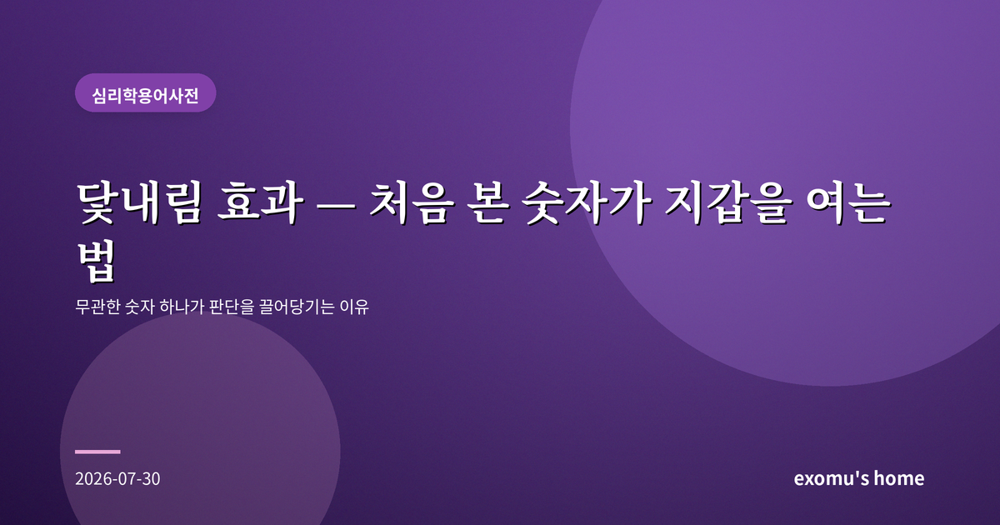
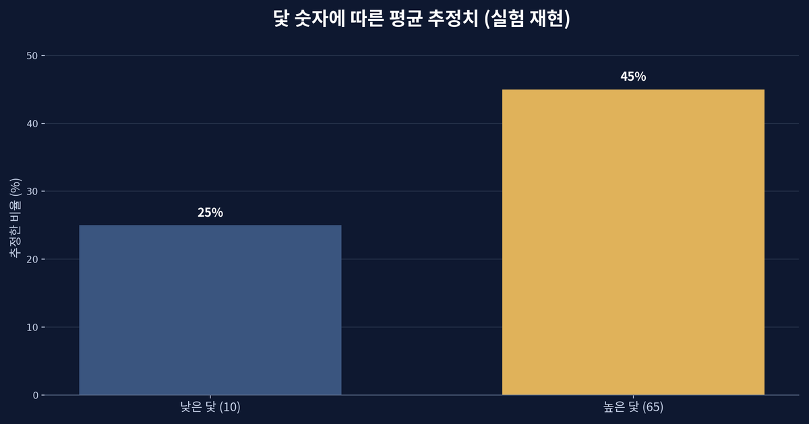
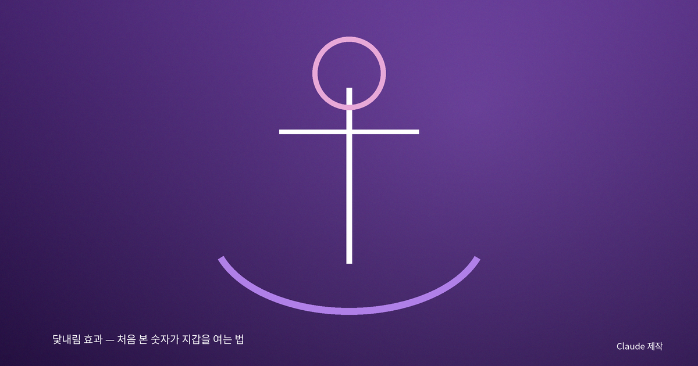
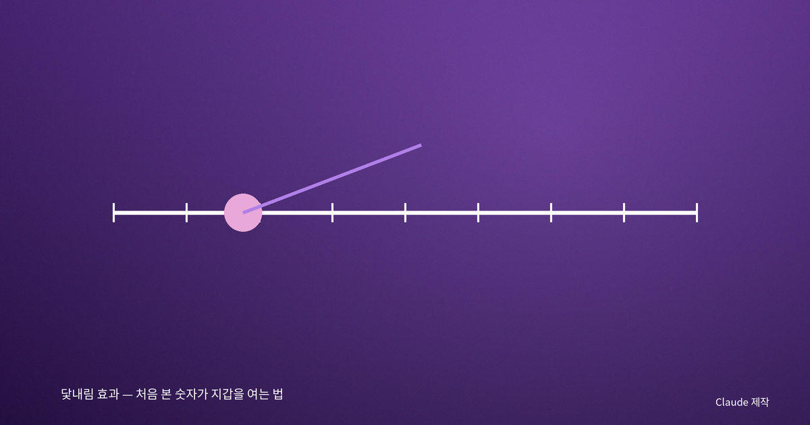
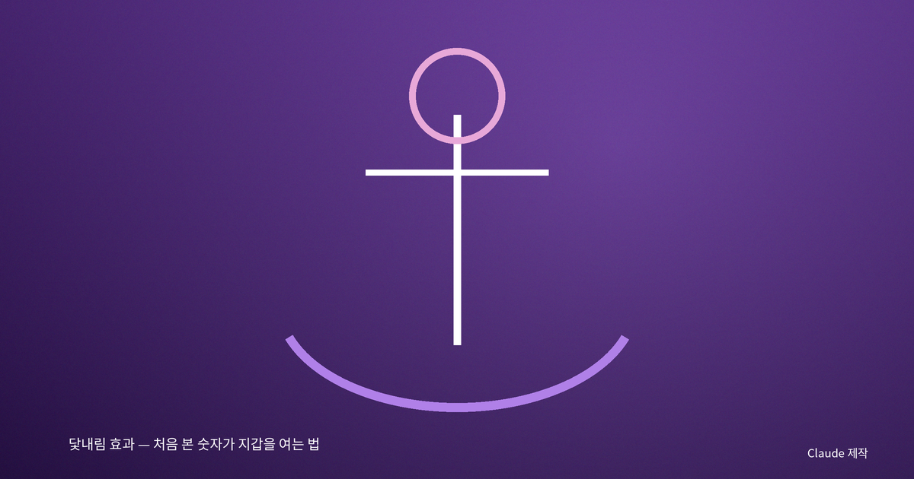

닻내림 효과 — 처음 본 숫자가 지갑을 여는 법

30만 원짜리 옆의 12만 원
닻내림 효과(anchoring effect)란 판단을 내릴 때 처음 접한 특정 숫자, 즉 '닻'에 이후의 추정이 끌려가는 현상을 말한다. 매장에서 30만 원짜리 코트를 먼저 본 뒤 12만 원짜리를 보면 싸게 느껴지지만, 처음부터 12만 원짜리만 봤다면 결코 싸다고 느끼지 않았을 것이다. 그 코트의 가치는 그대로인데, 앞에 놓인 닻 하나가 내 판단을 통째로 옮겨 놓은 것이다.

룰렛이 바꾼 대답
이 현상을 처음 체계적으로 보여 준 것은 1974년 두 심리학자의 실험이었다. 그들은 참가자 앞에서 1부터 100까지 적힌 원판을 돌렸다. 사실 이 원판은 10이나 65에서만 멈추도록 조작돼 있었다. 그런 다음 '유엔 가입국 중 아프리카 국가의 비율이 방금 나온 숫자보다 높은가 낮은가, 그리고 실제 비율은 몇 퍼센트라고 생각하는가'를 물었다. 놀랍게도 원판이 10에서 멈춘 집단은 평균 25%라고 답했고, 65에서 멈춘 집단은 평균 45%라고 답했다.
원판의 숫자는 아프리카 국가 비율과 아무 관련이 없다. 참가자들도 그것이 무작위라는 걸 알았다. 그런데도 방금 본 숫자가 대답을 끌어당겼다. 무관하다는 사실을 알면서도, 뇌는 눈앞의 숫자를 출발점으로 삼아 거기서 조금씩 조정하며 답을 찾는다. 그리고 그 조정은 대개 충분치 못해서, 답은 닻 근처에 머문다.

일상 곳곳에 드리운 닻
닻은 우리 삶 어디에나 있다. '정가 89,000원 → 할인가 39,000원'이라는 가격표는 89,000이라는 닻을 먼저 심는다. 연봉 협상에서 먼저 높은 숫자를 부른 쪽이 유리한 이유도, 부동산 호가가 실제 거래가를 끌어당기는 것도, 식당 메뉴 맨 위의 값비싼 코스가 두 번째 메뉴를 합리적으로 보이게 만드는 것도 모두 같은 원리다. 심지어 재판에서 검사가 구형한 형량이 최종 판결에 영향을 준다는 연구도 있다.

닻에서 배를 풀어내려면
그렇다면 어떻게 해야 할까. 완전히 벗어나기는 어렵지만 몇 가지는 도움이 된다. 첫째, 협상이나 구매 전에 나만의 기준값을 미리 정해 두는 것이다. 상대가 던지는 첫 숫자에 반응하기 전에 내가 생각하는 적정선을 종이에 적어 두면 닻의 힘이 약해진다. 둘째, 제시된 숫자의 근거를 의심하는 습관이다. '이 정가는 진짜 팔리던 가격인가'를 묻는 순간 닻은 조금 헐거워진다. 셋째, 반대 방향의 숫자를 일부러 떠올려 보는 것이다. 높은 값이 먼저 나왔다면 '이보다 훨씬 쌀 수도 있다'를 함께 떠올리는 식이다.
숫자는 중립적이지 않다
닻내림 효과가 알려 주는 것은, 우리가 숫자를 '읽는' 것이 아니라 숫자에 '이끌린다'는 사실이다. 세상은 끊임없이 우리 앞에 첫 숫자를 던진다. 그 숫자가 무엇을 위해, 누구에 의해 놓였는지를 한 번 더 생각하는 것만으로도 우리는 조금 더 자유로운 판단을 할 수 있다. 판단의 출발점을 남이 정하게 두지 않는 것, 그것이 닻에서 배를 풀어내는 첫걸음이다.
